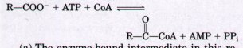
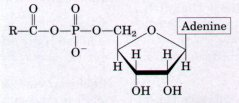
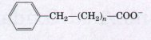

CH3(CH2)6COOH+NADH+H+
CH3(CH2)6COOH+NADH+H+The fatty acid components of triacylglycerols furnish a large fraction of the oxidative energy in animals. Triacylglycerols ingested in the diet are emulsified in the small intestine by bile salts, hydrolyzed by intestinal lipases, absorbed by intestinal epithelial cells and reconverted into triacylglycerols, then formed into chylomicrons by combination with specific apolipoproteins. Chylomicrons deliver triacylglycerols to tissues, where lipoprotein lipase releases free fatty acids for entry into cells. Triacylglycerols stored in adipose tissue of vertebrate animals are mobilized by the action of hormones through a hormone-sensitive triacylglycerol lipase. The fatty a,cids released by this enzyme bind to serum albumin and are carried in the blood to the heart, skeletal muscle, and other tissues that use fatty acids for fuel.
Once inside cells, free fatty acids are activated at the outer mitochondrial membrane by esterification with coenzyme A to form fatty acyl-CoA thioesters. These are converted into fatty acylcarnitine esters, which are carried by a specific transporter across the inner mitochondrial membrane into the matrix, where fatty acyl-CoA esters are formed again. All subsequent steps in the oxidation of fatty acids take place in the form of their coenzyme A thioesters, within the mitochondrial matrix.
In the first stage of fatty acid β oxidation, four reactions are required to remove each acetyl-CoA unit from the carboxyl end of saturated fatty acylCoAs: (1) dehydrogenation of the α and β carbons (C-2 and C-3) by FAD-linked acyl-CoA dehydrogenases, (2) hydration of the resulting trans-Δ2 double bond by enoyl-CoA hydratase, (3) dehydrogenation of the resulting L-β-hydroxyacyl-CoA by NADlinked β-hydroxyacyl-CoA dehydrogenase, and (4) CoA-requiring cleavage by thiolase of the resulting β-ketoacyl-CoA to form acetyl-CoA and the coenzyme A thioester of the original fatty acid, shortened by two carbons. The shortened fatty acyl-CoA can then reenter the sequence, with loss of another acetyl-CoA. For example, the 16-carbon palmitate yields altogether eight molecules of acetyl-CoA, which in the second stage of fatty acid oxidation can be oxidized to CO2 via the citric acid cycle. A large fraction of the theoretical yield of free energy from fatty acid oxidation is recovered as ATP by oxidative phosphorylation, the third and final stage of the oxidative pathway.
Oxidation of unsaturated fatty acids requires the action of
two additional enzymes: enoyl-CoA isomerase and 2,4-dienoyl-CoA
reductase. Oddcarbon fatty acids are oxidized by the same path
way but yield one molecule of propionyl-CoA. The latter is
carboxylated to methylmalonyl-CoA, which is isomerized to
succinyl-CoA by a reaction catalyzed by methylmalonyl-CoA mutase.
This enzyme requires coenzyme Bl2, a complex cofactor containing
a cobalt ion in a corrin ring system. Coenzyme B12 is involved in
a number of enzymecatalyzed reactions in which a hydrogen atom is
exchanged with a functional group attached to an adjacent carbon.
Fatty acid oxidation is tightly regulated. High carbohydrate intake suppresses fatty acid oxidation in favor of fatty acid biosynthesis.
Peroxisomes of plants and animals, and glyoxysomes in germinating seeds, carry out β oxidation by four steps similar to those occurring in mitochondria. The first oxidation step transfers electrons directly to O2, generating Hz02; no energy is conserved, and the potentially damaging H2O2 is destroyed by catalase. In glyoxysomes, β oxidation serves to convert stored lipids into four-carbon compounds (via the glyoxylate cycle); these compounds are precursors of a variety of intermediates and products required during seed germination.
The ketone bodies acetoacetate, D-β-hydroxybutyrate, and acetone are formed in the liver and are carried to other tissues, where they serve as fuel molecules, being oxidized to acetyl-CoA and thus entering the citric acid cycle. The overproduction of ketone bodies in uncontrolled diabetes or severe starvation can lead to acidosis or ketosis.
General
Boyer, P.D. (1983) The Enzymes, 3rd edn, Vol. 16: Lipid Enzymology, Academic Press, Inc., San Diego, CA.
Gurr, M.I. & Harwood, J.L. (1991) Lipid Biochemistry: An Introduction, 4th edn, Chapman & Hall, London.
Numa, S. (ed) (1984) Fatty Acid Metabolism and Its Regulation, New Comprehensive Biochemistry, Vol. 7 (Neuberger, A. & van Deenen, L.L.M., series eds), Elsevier Biomedical Press, Amsterdam.
An excellent collection of articles on the enzymes of prokaryotes and eukaryotes and their regulation.
β Oxidatzon
Galliard, T. (1980) Degradation of acyl lipids: hydrolytic and oxidative enzymes. In The Biochemistry of Plants, Vol. 4 (Stumpf, P.K., ed), pp. 85-116, Academic Press, Inc., San Diego, CA.
A description of the enzymes of β oxidation in plants.
Greville, G.D. & Tubbs, P.K. (1968) The catabolism of long-chain fatty acids in mammalian tissues. Essays Biochem. 4, 155-212.
An early reuiew, but basic to more recent deuelopments.
Harwood, J.L. (1988) Fatty acid metabolism. Annu. Reu. Plant Physiol. Plant Mol. Biol. 39, 101138.
Kindl, H. (1984) Lipid degradation in higher plants. In Fatty Acid Metabolism and Its Regulation (Numa, S., ed), pp. 181-204, Elsevier Biomedical Press, Amsterdam.
Schulz, H. (1985) Oxidation of fatty acids. In Biochemistry of Lipids and Membranes (Vance, D.E. & Vance, J.E., eds), pp. 116-142, The Benjamin/ Cummings Publishing Company, Menlo Park, CA.
Schulz, H. & Kunau, W.-H. (1987) Beta-oxidation of unsaturated fatty acids: a revised pathway. Trends Biochem. Sci. 12, 403-406.
Wang, C.S., Hartsuck, J., & McConathy, W.J. (1992) Structure and functional properties of lipoprotein lipase. Biochim. Biophys. Acta 1123, 1-17.
Advanced-level discussion of the enzyme that releases fatty acids from lipoproteins in the capillaries of muscle and adipose tissue.
Ketone Bodzes
Foster, D.W. & McGarry, J.D. (1983) The metabolic derangements and treatment of diabetic ketoacidosis. N. Engl. J. Med. 309, 159-169.
McGarry, J.D. & Foster, D.W. (1980) Regulation of hepatic fatty acid oxidation and ketone body production. Annu. Reu. Biochem. 49, 395-420.
Robinson, A.M. & Williamson, D.H. (1980) Physiological roles of ketone bodies as substrates and signals in mammalian tissues. Physiol. Reu. 60, 143-187.
l. Energy in Triacylglycerols On a per-carbon basis, where does the largest amount of biologically available energy in triacylglycerols reside: in the fatty acid portions or the glycerol portion? Indicate how knowledge of the chemical structure of triacylglycerols provides the answer.
2. Fuel Reserues in Adipose Tissue Triacylglycerols have the highest energy content of the major nutrients.
(a) If 15% of the body mass of a 70 kg adult consists of triacylglycerols, calculate the total available fuel reserve, in both kilojoules and kilocalories, in the form of triacylglycerols. Recall that 1.00 kcal = 4.18 kJ, and that 1.0 kcal = 1.0 nutritional Calorie.
(b) If the basal energy requirement is approximately 8,400 kJ/day (2,000 kcal/day) how long could this person survive if the oxidation of fatty acids stored as triacylglycerols were the only source of energy?
(c) What would be the weight loss per day in pounds under such starvation conditions (1 lb = 0.454 kg)?
3. Common Reaction Steps in the Fatty Acid Oxidation Cycle and Citric Acid Cycle Cells often follow the same enzyme reaction pattern for bringing about analogous metabolic reactions. For example, the steps in the oxidation of pyruvate and aketoglutarate to acetyl-CoA and succinyl-CoA, although catalyzed by different enzymes, are very similar. The first stage in the oxidation of fatty acids follows a reaction sequence closely resembling one in the citric acid cycle. Show by equations the analogous reaction sequences in the two pathways.
4. The Chemistry of the Acyl-CoA Synthetase Reaction Fatty acids are converted into their coenzyme A esters by the reversible reaction catalyzed by acyl-CoA synthetase:

(a) The enzyme-bound intermediate in this reaction has been identified as the mixed anhydride of the fatty acid and adenosine monophosphate (AMP), acyl-AMP:

Write two equations corresponding to the two steps involved in the reaction catalyzed by acylCoA synthetase.
(b) The reaction above is readily reversible, with an equilibrium constant near l. How can this reaction be made to favor formation of fatty acylCoA?
5. Oxidation of Tritiated Palmitate Palmitate uniformly labeled with tritium (3H) to a specific activity of 2.48 × 108 counts per minute (cpm) per micromole of palmitate is added to a mitochondrial preparation that oxidizes it to acetyl-CoA. The acetyl-CoA is isolated and hydrolyzed to acetate. The specific activity of the isolated acetate is 1.00 × 107 cpm per micromole. Is this result consistent with the β-oxidation pathway? Explain. What is the final fate of the removed tritium?
6. Compartmentation in β Oxidation Free palmitate is activated to its coenzyme A derivative (palmitoyl-CoA) in the cytosol before it can be oxidized in the mitochondrion. If palmitate and [14C]coenzyme A are added to a liver homogenate, palmitoyl-CoA isolated from the cytosolic fraction is radioactive, but that isolated from the mitochondrial fraction is not. Explain.
7. Effect of Carnitine Deficiency A patient developed a condition characterized by progressive muscular weakness and aching muscle cramps. These symptoms were aggravated by fasting, exercise, and a high-fat diet. The homogenate of a muscle specimen from the patient oxidized added oleate more slowly than did control homogenates of muscle specimens from healthy individuals. When carnitine was added to the patient's muscle homogenate, the rate of oleate oxidation equaled that in the control homogenates. The patient was diagnosed as having a carnitine deficiency.
(a) Why did added carnitine increase the rate of oleate oxidation in the patient's muscle homogenate?
(b) Why were the symptoms aggravated by fasting, exercise, and a high-fat diet?
(c) Suggest two possible reasons for the defciency of muscle carnitine in the patient.
8. Fatty Acids as a Source of Water Contrary to legend, camels do not store water in their humps, which actually consist of a large fat deposit. How can these fat deposits serve as a source of water? Calculate the amount of water (in liters) that can be produced by the camel from 1 lb (0.45 kg) of fat. Assume for simplicity that the fat consists entirely of tripalmitoylglycerol.
9. Petroleum as a Microbial Food Source Some microorganisms of the genera Nocardia and Pseudomonas can grow in an environment where hydrocarbons are the only food source. These bacteria oxidize straight-chain aliphatic hydrocarbons, for example, octane, to their corresponding carboxylic acids:
CH3(CH2)6CH3+NAD++O2CH3(CH2)6COOH+NADH+H+
How can these bacteria be used to clean up oil spills?
10. Metabolism of a Straight-Chain Phenylated Fatty Acid A crystalline metabolite was isolated from the urine of a rabbit that had been fed a straight-chain fatty acid containing a terminal phenyl group:

A 302 mg sample of the metabolite in aqueous solution was completely neutralized by adding 22.2 mL of 0.1 M NaOH.
(a) What is the probable molecular weight and structure of the metabolite?
(b) Did the straight-chain fatty acid fed to the rabbit contain an even or an odd number of methylene (-CH2-) groups (i.e., is n even or odd)? Explain.
11. Fatty Acid Oxidation in Diabetics When the acetyl-CoA produced during β oxidation in the liver exceeds the capacity of the citric acid cycle, the excess acetyl-CoA reacts to form the ketone bodies acetoacetate, D-β-hydroxybutyrate, and acetone. This condition exists in cases of severe diabetes because the patient's tissues cannot use glucose; they oxidize large amounts of fatty acids instead. Although acetyl-CoA is not toxic, the mitochondrion must divert the acetyl-CoA to ketone bodies. Why? How does this diversion solve the problem?
12. Consequences of a High-Fat Diet with No Carbohydrates Suppose you had to subsist on a diet of whale and seal blubber with little or no carbohydrate.
(a) What would be the effect of carbohydrate deprivation on the utilization of fats for energy? (b) If your diet were totally devoid of carbohy
drate, would it be better to consume odd- or evennumbered fatty acids? Explain.
13. Formation of Acetyl-CoA from Fatty Acid Precursors Write a balanced net equation for the formation of acetyl-CoA from the following substances, including all activation steps:
(a) Myristoyl-CoA (b) Stearate
(c) D-β-Hydroxybutyrate
14. Pathway of Labeled Atoms during Fatty Acid Oxidation [9-14C]Palmitate is oxidized under conditions in which the citric acid cycle is operating. What will be the location of 14C in
(a) acetyl-CoA,
(b) citrate, and
(c) butyryl-CoA?
Assume only one turn of the citric acid cycle.
15. Net Equation for Complete Oxidation of D-β-Hydroxybutyrate Write the net equation for the complete oxidation of D-β-hydroxybutyrate in the kidney. Include any required activation steps and all oxidative phosphorylations.
16. Role of FAD as Electron Acceptor Acyl-CoA dehydrogenase uses enzyme-bound FAD as a prosthetic group to dehydrogenate the a and β carbons of fatty acyl-CoA. What is the advantage of using FAD as an electron acceptor rather than NAD+ Explain in terms of the standard reduction potentials for the Enz-FAD/FADH2 (Eo = -0.219 V) and NAD+/NADH (E'0 = -0.320 V) half reactions.
17. β Oxidation of Arachidic Acid How many turns of the fatty acid oxidation cycle are required to oxidize arachidic acid (see Table 9-1) completely to acetyl-CoA?
18. Sources of H2O Produced in β Oxidation The complete oxidation of palmitate to carbon dioxide and water is represented by the overall equation
Palmitate + 23O2 + 129Pi + 129ADP 16CO2
+ 129ATP + 145H2O
The 145 H2O molecules come from two separate reactions. What are they, and how many H2O molecules are produced in each?
19. Fate of Labeled Propionate If [3-14C]propionate (14C in the methyl group) is added to a liver homogenate, 14C-labeled oxaloacetate is rapidly produced. Draw a flow chart for the pathway by which propionate is transformed to oxaloacetate and indicate the location of the 14C in oxaloacetate.
20. Biological Importance of Cobalt Cattle, deer, sheep,and other ruminant animals produce large amounts of propionate in the rumen through the bacterial fermentation of ingested plant matter. This propionate is the principal source of glucose for the animals via the route
Propionate oxaloacetate glucose
In some areas of the world, notably Australia, ruminant animals sometimes show symptoms of anemia with concomitant loss of appetite and retarded growth. These symptoms are the result of the animals' inability to transform propionate to oxaloacetate, which is due to a cobalt deficiency caused by very low cobalt levels in the soil. Explain.